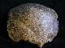
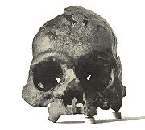
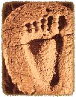

Creationist Arguments: Anomalous Fossils
A common creationist claim is that humans existed alongside or predated all of their presumed ancestors in the fossil record. Taylor (1992) contains a long list of supposed examples, and Bowden (1981) discusses a number of them in more detail.
Many of these cases are hominid fossils which appear in the correct position in the fossil record. Some of these are discussed elsewhere on this site: Petralona, ER 1470, the Turkana Boy, and the Krapina specimens. Other examples are:
Laetoli footprints: according to most creationists, these are modern human footprints that are dated at 3.7 million years ago, long before humans were meant to exist. Creationists emphasize the close resemblance between these and modern human footprints, but often neglect to mention their extremely small size and the fact they may also be similar to the feet of the australopithecines living at the same time. Exactly how similar they are is a matter of some debate.
Tuttle (1990) thinks the footprints are too human-like to belong to A. afarensis, and suggests they may belong to another species of australopithecine, or an early species of Homo. Johanson, who has often said that Lucy was fully adapted to a modern style of bipedality, claims (Johanson and Edgar 1996) that the A. afarensis foot bones found at Hadar, when scaled down to an individual of Lucy's size, fit the prints perfectly. Stern and Susman (1983), who have argued that Lucy's foot and locomotion were bipedal but not yet fully human-like, believe that the footprints show subtle differences from human prints and could have been made by afarensis. Clarke (1999) believes that the Laetoli tracks could have been made by feet very similar to those of the new australopithecine fossil Stw 573.
In short, there is a wide range of opinions about the nature of the footprints and whether A. afarensis could have made them. Most creationists usually cite only Tuttle, whose conclusions they find most convenient. The most honest conclusion, for now, is to admit that although no-one can be entirely sure what made the Laetoli footprints, it seems quite likely that they belonged to australopithecines.
KP 271: Lubenow (1992) states that this lower humerus is indistinguishable from a human bone, Parker and Morris (1982) state that it is a human bone. Lubenow quotes a number of scientists who state that KP 271 is very humanlike. He does not quote from Feldesman (1982), who found that KP 271, "far from being more 'human-like' than Australopithecus, clearly associates with the hyperrobust Australopithecines from Lake Turkana".
KP 271 has usually been assigned to the australopithecines (and recently to A. anamensis) because no other hominids are known from 4 million years ago.
Although Lubenow considers this conclusion "shocking", there are plausible reasons for it. The lower humerus of chimps is very similar to that of humans, and it is reasonable to suppose that australopithecines would be even more similar, especially since the upper end of the humerus in australopithecines is known to fall within the human range. Patterson and Howells (1967) state that both KP 271 and an australopithecine upper humerus were, based on their measurements, virtually identical to some modern humans, yet Lubenow is able to conclude that KP 271 is "strikingly close" [his italics] to modern humans, while the upper humerus is only "quite similar, based on visual assessment".
Lubenow's claim that the lower humerus is "relatively easy to discriminate between humans and other primates" is incorrect. Patterson and Howells say that "it is difficult to identify family from only the distal end of the hominoid humerus". Most of the measurements they used had considerable overlap between humans and chimps. Because of this, they were forced to use multivariate analysis, but even this advanced statistical technique was not able to completely distinguish human and chimp populations. Because the lower humerus is such a poor diagnostic indicator, it was premature to claim that KP 271 can not be an australopithecine fossil.
The claim that KP 271 was human has been one of the stronger creationist arguments because, although it had not been proven, neither was it demonstrably wrong (unlike almost every other creationist argument about human evolution). However a recent paper now strongly indicates that KP 271 is an australopithecine and not a human fossil.
Lague and Jungers (1996) conducted an extensive study of the lower humeri of apes, humans, and hominid fossils. They used multivariate analysis, a technique which is highly praised by creationists when it delivers results favorable to them. Lague and Jungers' results show convincingly that KP 271 lies well outside the range of human specimens. Instead, it clusters with a group of other hominid fossils so strongly that the probability that it belongs to the human sample, rather than fossil hominid group, is less than one thousandth (0.001). They conclude:
"The specimen is therefore reasonably attributable to A. anamensis (Leakey et al. 1995), although the results of this study indicate that the Kanapoi specimen is not much more "human-like" than any of the other australopithecine fossils, despite prior conclusions to the contrary" (Lague and Jungers 1996)
Fontechevade Man: a skullcap fragment which is difficult to classify, and whose dating is doubtful, it is probably also an archaic H. sapiens.

{kind=link}
Vertesszollos Man: a few tooth fragments and part of an adult cranium found in Hungary. The cranial fragment is very thick and broad, with a mixture of modern and primitive features. This is also considered to be probably an archaic sapiens. This would match its age, which has variously been estimated to be from 160,000 to over 350,000 years. (Day 1986)
Olmo Skull: a modern skullcap discovered in 1883 at Olmo in Italy. Later tests gave an age consistent with this of between 50 and 75 thousand years. (Conrad 1982)
Of the other "anomalous" hominid fossils, most are of fossil humans that have since been discovered to be intrusions, i.e. they have been buried in deposits that are older than they are. Examples are:
Abbeville, or Moulin Quignon, Jaw: discovered by Jacques Boucher de Perthes in 1863 at Abbeville in France. This was a modern-looking jaw that had come from very old deposits. However because of strong evidence that it was a modern jaw that had been "planted", probably by de Perthes' workmen, who were paid for good finds, few scientists have ever accepted it as genuine. (Trinkaus and Shipman 1992)
Oldoway Man: a complete skeleton found by Hans Reck at Olduvai Gorge in 1913. In 1932 it was shown to be a modern Homo sapiens, buried 20,000 years ago in older deposits that had been exposed by faulting (Johanson and Shreeve 1989). Taylor (1992) writes "Some have suggested this skeleton is an intrusive burial", when in fact this explanation has been unanimously accepted (even by Reck and the notoriously stubborn Louis Leakey). Bowden (1981) disputes this, as Reck had originally claimed the skeleton could not be an intrusive burial because of the undisturbed layers above it. It was later shown, however, that the layer above the skeleton had been misidentified by Reck, and instead of being very old, had been laid down recently, after the skeleton had been buried (Morell 1995). The completeness of the skeleton and its contracted position were also consistent with a burial rather than a natural fossilization.
Kanjera Man, Kanam Jaw: discovered by Louis Leakey near Lake Victoria in 1932, and claimed by him to be very old and anatomically modern human ancestors. The Kanjera skull fragments were later shown to be modern humans buried in older sediments. The Kanam jaw may be very old, but is not as modern as Leakey thought. (Morell 1995)
Castenedolo Man: Morris and Parker
(1982) say "Fossils of ordinary people in Mid-Tertiary rock
[i.e. tens of millions of years old; the actual date is about 1.5
million years] were found in Castenedolo, Italy back in the late
1800's ...". According to Boule, an official report on these skeletons in 1899
noted that all the fossils from the deposit were impregnated with
salt, except the human ones. This implies that they are from
relatively recent burials. Collagen tests in 1965 and radiocarbon
dating in 1969 confirmed this. (Conrad 1982)
Cremo and Thompson, in their book Forbidden Archeology, claim that the original
documents in fact do not support the claim of intrusive burial (see here). Not being able to obtain the original
literature I can neither confirm nor deny this, though I do not have a
lot of faith in the scholarship of Cremo and Thompson (see a review of their book here). Whatever the details,
I find the modern tests conducted on the bones more convincing than ancient reports at second-hand.
Guadeloupe Man: W. Cooper claimed in 1983 that a modern skeleton found on Guadeloupe in 1812 had been dated at 25 million years old, in the Miocene period. The excellent condition of the skeleton, and the fact that it had originally been found with other skeletons (all pointing in the same direction) along with a dog and some implements, indicate that it was a recent burial. In addition, it has never been claimed to be from Miocene deposits by anyone except Cooper. (Howgate and Lewis 1984)
Galley Hill Man: this was a modern-looking skeleton discovered in 1888 in old deposits. Even last century, many thought it was a modern human, and this was confirmed in 1948 when it was fluorine dated (Trinkaus and Shipman 1992).
Foxhall Jaw: this anatomically modern jaw was reportedly found by farm labourers in 1855, 16 feet below the surface of a pit. It passed through a number of hands to Thomas Collyer, who met with considerable skepticism in his attempts to claim that it was of great antiquity. The whereabouts of the jaw are no longer known.

Calaveras Man: this was a modern skull discovered in 1866 in California in Pliocene deposits (2 to 5 million years old). A few scientists did believe it genuine, but it was always widely considered to be a hoax. Personal testimonies and geological evidence indicate that it is probably a modern Indian found in nearby limestone caves, and that it was planted as a practical joke by miners. Tests have shown it to be recent, probably less than 1000 years old. (Dexter 1986; Taylor et al. 1992; Conrad 1982)Meister Man: this was a rock, discovered in 1968 by creationist William Meister, which showed the outline or a shoe or sandal with a trilobite embedded in it. According to mainstream geology, trilobites went extinct long before man appeared. The print showed none of the criteria by which genuine prints can be recognized, and the approximate footlike shape can be explained by normal geological processes. (Strahler 1987, see also Glen Kuban's article on The Meister Print)
Moab Man: two green-stained partial skeletons were found in 1971 near Moab in Utah. Creationists have claimed that they were found in a Mesozoic (over 65 million years old) rock formation, but testimony from the anthropologist who helped excavate them shows that they were in loose sand, and partly decayed and not at all fossilized. He thought that they were probably Indian bones of recent origin. The skeletons were later bought by creationist Carl Baugh, who named them as a new species, Humanus Bauanthropus (Strahler 1987). A recent comprehensive article on the Moab Man skeletons (Coulam and Schroedl 1995) convincingly demonstrates that the skeletons are most probably the remains of prehistoric azurite miners who were buried in the formation, either deliberately or as a result of a mining accident. (See also Glen Kuban's article on Moab Man)
Malachite Man: more recently, creationist Don Patton has claimed that the discovery of a number of malachite-encrusted skeletons between 1990 and 1996 is evidence that humans existed long before they were supposed to. It turned out that some of the photos of Malachite Man on his website were identical to photos that were published of the Moab Man skeletons in the February 1975 issue of Desert Magazine. (For more information, visit The Life and Death of Malachite Man, by Glen Kuban.) Since then, the website has been changed to distinguish between the two finds. There is as yet no published material on these skeletons, but the fact that they were found in the same copper mine as the Moab Man skeletons suggests that they are also recent.Freiburg Skull: Whitcomb and Morris (1961) claim that a skull stored at Freiburg in Germany is far older than evolutionary theory would allow. Creationist Wayne Frair has shown it to be a fake, molded out of pieces of brown coal (Frair 1993).

Paluxy River: it has been widely claimed by creationists that fossil human footprints have been found alongside dinosaur footprints at the Paluxy River near Glen Rose, Texas. Parker (1982), for example, claimed that they "are much more obviously human" than the Laetoli footprints. Scientists showed that many of them were indistinct or infilled dinosaur prints. Some other supposed footprints are either erosional features or, in a few cases (such as the Burdick footprint shown at right (Whitcomb and Morris 1961)), carvings. In 1984 the dinosaurian origin of many of the "better" prints was dramatically confirmed when Glen Kuban and Ron Hastings found color markings which preserved the outline of three-toed dinosaur feet. Although there have been some insinuations that these markings could be artificial stains, core samples show that they were caused by an infilling of secondary sediment into the prints. This evidence has caused most creationists to abandon the Paluxy footprints, although claims about them continue to circulate. For further details read Kuban (1996), or Strahler (1987). (See also Kuban's web site on the Paluxy River controversy at http://www.talkorigins.org/faqs/paluxy.html.)
Kow Swamp: Henry Morris has claimed (1974) that since 10,000 year old Homo erectus skulls were found at Kow Swamp in Australia, erectus cannot be the ancestor of modern man. The logic is faulty, since there is no reason that a population of erectus could not have survived long after Homo sapiens first appeared. Morris also has his facts wrong. Characteristics of the Kow Swamp skulls led to suggestions that some Homo erectus _features_ had survived in them, as the quote Morris gives from Thorne and Macumber (1972) clearly states. Morris' claim that they are erectus _skulls_ is incorrect. It is now thought that the most prominent such primitive feature, flattened foreheads, may have been caused by the cultural practice of head-binding (Day 1986; Gamble 1993).
Lubenow (1992) argues that the Kow Swamp skulls (and some other similar Australian skulls) are very similar to H. erectus and should be classified as that species, and that the pathological or cultural causes suggested for their unusual shape could equally well be applied to explain the features of H. erectus skulls. Lubenow gives a list of 16 diagnostic characteristics of H. erectus and claims that the Kow Swamp skulls fit them well. Peter Brown (pers.comm., 1996) disagrees strongly and shows that the Kow Swamp skulls differ markedly from H. erectus, and that Lubenow's characteristics do not apply to them (Brown is an Australian paleoanthropologist who has studied the skulls). Kennedy (1984) shows that the femurs of the Kow skeletons are identical to those of modern humans, and significantly distinct from those of those of H. erectus. Other scientists would also dispute that the Kow Swamp skulls are H. erectus:
"There is no doubt that all the people who have ever lived on the continent [Australia] would qualify as anatomically modern humans" (Gamble 1993)
"Analysis of these skeletons has shown conclusively that all are of modern humans, Homo sapiens sapiens." (Burenhult 1993)
Scientists now generally accept that the Kow Swamp skulls were artifically deformed. This conclusion is based on the work of Brown (1981), who performed comparisons of normal and deformed Melanesian skulls. The Kow Swamp skulls show the same signs of deformation that are found in the Melanesian skulls, and these signs are not found in Homo erectus. Most obviously, cranial deformation causes a very high cranial vault, whereas H. erectus has a very low cranial vault.
The "Stone Circle" at Olduvai Gorge: Gish (1985) says:
"Extremely startling, and a fact very difficult for evolutionists to assimilate, was Louis Leakey's claim that he had found the remains of a circular stone habitation hut at the bottom of Bed I. Deliberate manufacture of such shelters has long been attributed only to Homo sapiens, and can be observed in Africa today."
Gish then asks how australopithecines can be the ancestor of habilis, or habilis of erectus, if they are all found together? And how could erectus be the ancestor of modern man, if traces of modern man are found below it?
There are a number of errors in this reasoning. First, the australopithecines in question are robust, and have never been considered ancestors of Homo. Even if they were, there is no reason why an ancestor can not coexist with a descendant species.
Secondly, there is no evidence that the stone circle was a hut, or that it was so advanced that it could only be attributed only to H. sapiens, as claimed by Gish. Louis Leakey claimed that it may have been no more than a windbreak, and so rudimentary that he saw no difficulty in believing that H. habilis could have made it:
"The recent discovery of a rough circle of loosely piled stones on the living floor at site D.K. I, in the lower part of Bed I, is noteworthy. ... It seems that the early hominids of this period were capable of making rough shelters or windbreaks, and it is likely that Homo habilis may have been responsible." (Leakey et al. 1964)
Thirdly, most scientists now agree that the circle is not an artifact. It is only a rough arrangement, and could have just as easily have been formed by water or other natural forces. (Johanson and Shreeve 1989; Tattersall 1993)
The Calaveras Skull Revisited, by Paul Heinrich
Kow Swamp, by Peter Brown
Early Man Fossils: KP 271 (creationist article on KP 271)
The "Meister Print", by Glen Kuban
Moab Man, by Glen Kuban
This page is part of the Fossil Hominids FAQ at the talk.origins Archive.
Home Page |
Species |
Fossils |
Creationism |
Reading |
References
Illustrations |
What's New |
Feedback |
Search |
Links |
Fiction
http://www.talkorigins.org/faqs/homs/a_anomaly.html, 09/24/2004
Copyright © Jim Foley
|| Email me